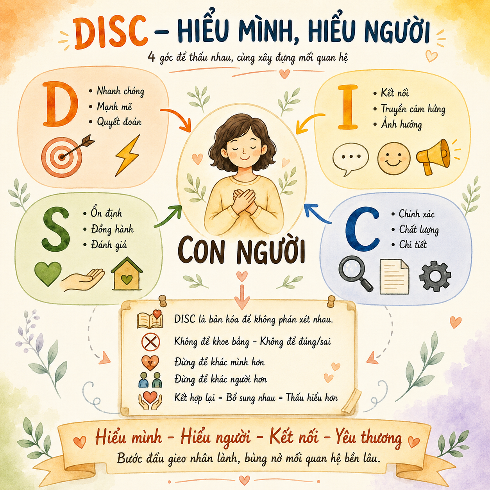
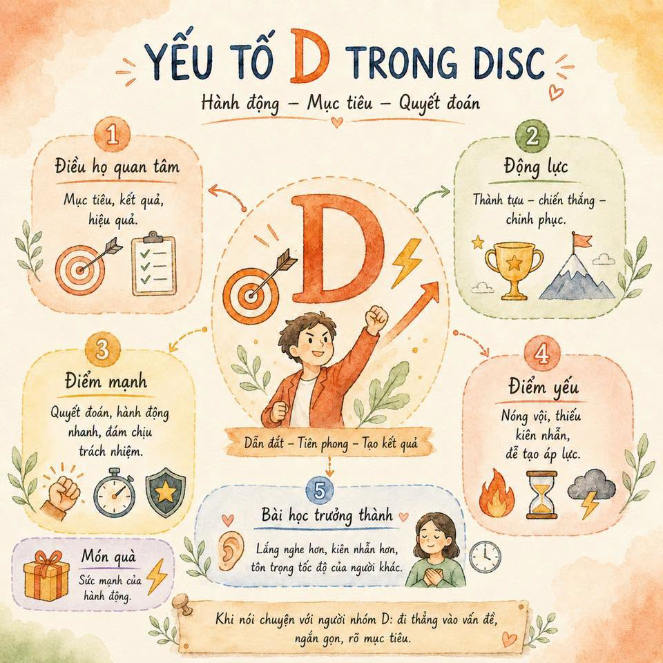
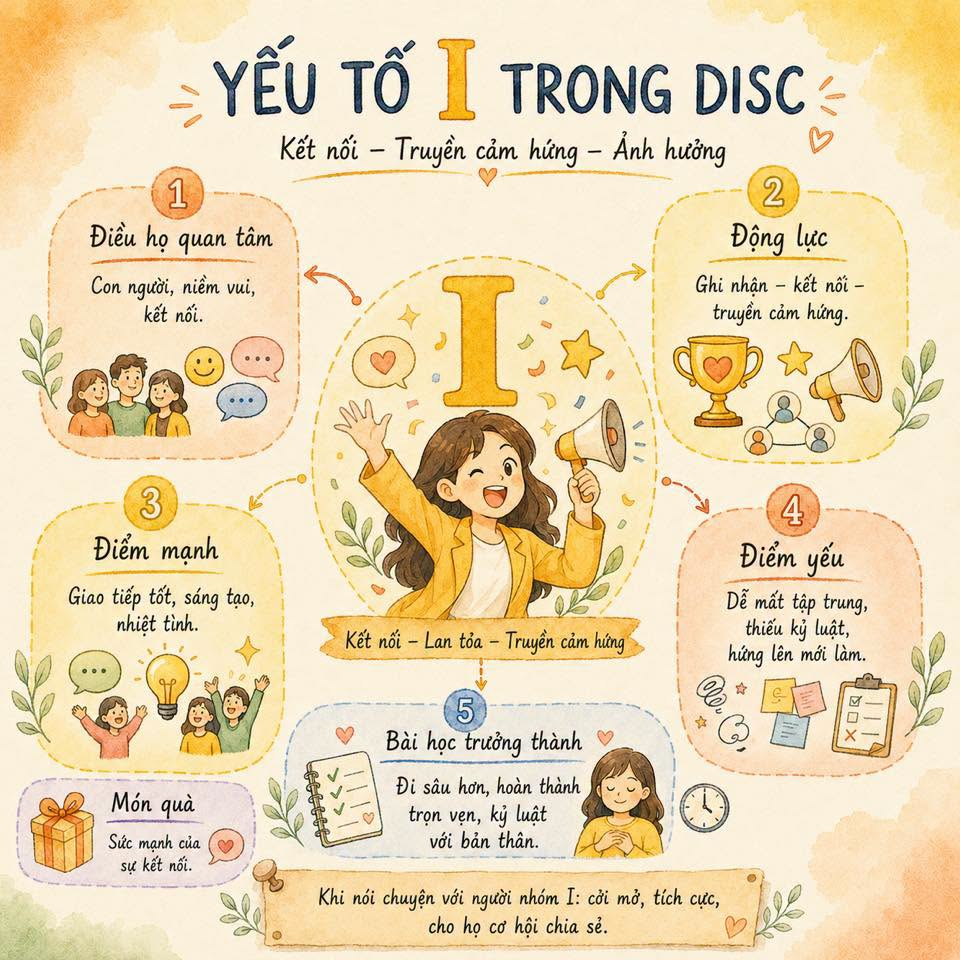
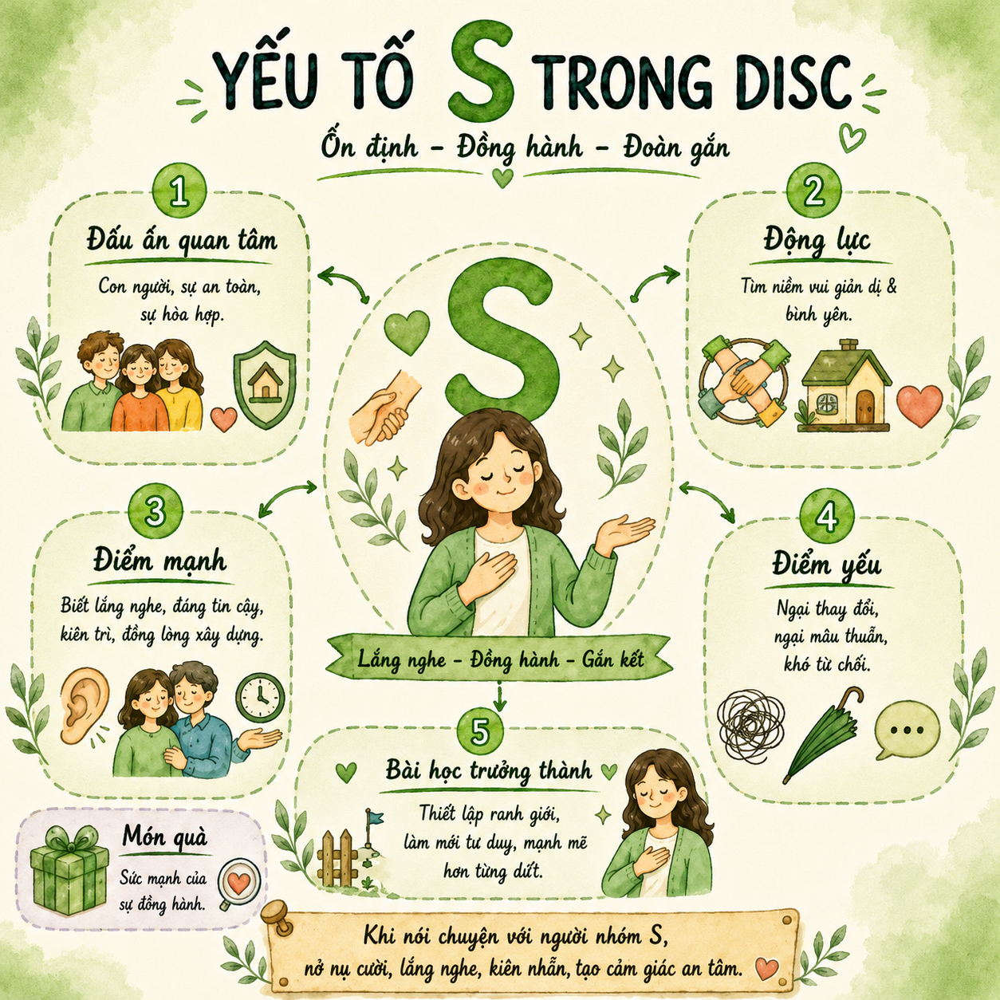
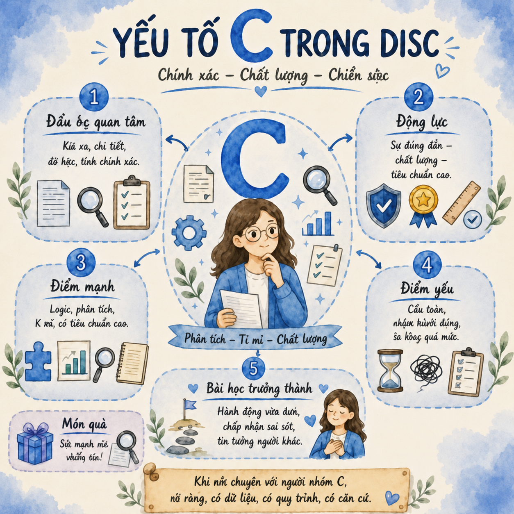

DISC là gì?
DISC là một công cụ phân tích tính cách được nhà tâm lý học William Marston phát triển vào những năm 1920. Tên gọi là viết tắt của bốn nhóm hành vi chính. Marston cho rằng tính cách không chỉ do di truyền, mà còn được định hình bởi môi trường và trải nghiệm cá nhân — tức mỗi người phản ứng với thế giới theo một phong cách riêng, có thể quan sát và nhận diện được.
D — Dominance (Thống lĩnh)
Hành động · Mục tiêu · Quyết đoán
I — Influence (Ảnh hưởng)
Kết nối · Truyền cảm hứng · Lan tỏa
S — Steadiness (Kiên định)
Ổn định · Đồng hành · Bình yên
C — Conscientiousness (Tuân thủ)
Chính xác · Chất lượng · Chiều sâu
Hai trục phân loại
Bốn nhóm được sắp xếp dựa trên hai trục: ưu tiên (hướng về công việc hay con người) và nhịp độ (nhanh hay chậm).
D · nhanh — công việc
Tư duy mục tiêu: “Làm thế nào để đạt được kết quả?”
I · nhanh — con người
Tư duy kết nối: “Làm thế nào để tạo sự cộng hưởng?”
S · chậm — con người
Tư duy đồng hành: “Làm thế nào để mọi người đều ổn?”
C · chậm — công việc
Tư duy phân tích: “Làm thế nào cho đúng quy trình?”

Vì sao nên học DISC?
Bản chất mỗi người có một tính cách, một lăng kính, một hệ giá trị riêng. Nhiều xung đột xảy ra không phải vì ai đúng ai sai, mà vì chúng ta chưa thật sự hiểu nhau và chưa biết cách truyền tải thông điệp theo cách phù hợp. DISC giúp ta tiếp cận khéo léo hơn, truyền tải tốt hơn và kết nối sâu hơn — không phải để thao túng.
🪞 Hiểu chính mình
Biết xu hướng tự nhiên, điểm mạnh, điểm yếu và cách mình phản ứng trong từng tình huống — để tự điều chỉnh.
💞 Hôn nhân
Hai người đến với nhau vì sự khác biệt; sau hôn nhân, chính khác biệt đó dễ thành căng thẳng nếu không thấu hiểu.
🧒 Con cái
“Cha mẹ sinh con, trời sinh tính.” Hiểu hành vi của con để dẫn dắt và đồng hành phù hợp, không vô tình gây tổn thương.
💼 Công việc
Không hiểu phong cách của nhau dẫn đến hiểu lầm, xung đột không đáng có và lãng phí tiềm năng tập thể.
Dominance — Người dẫn dắt
Dẫn dắt · Tiên phong · Tạo kết quả
🎯 Điều họ quan tâm
Mục tiêu, kết quả, hiệu quả.
🏆 Động lực
Thành tựu – chiến thắng – chinh phục.
💪 Điểm mạnh
Quyết đoán, hành động nhanh, dám chịu trách nhiệm.
⚠️ Điểm yếu
Nóng vội, thiếu kiên nhẫn, dễ tạo áp lực.
🙈 Điểm mù
Mình nghĩ: “Tôi đang giúp người khác phát triển.” — Người khác thấy: “Tôi đang bị thúc ép.”
🌱 Bài học trưởng thành
Lắng nghe hơn, kiên nhẫn hơn, tôn trọng tốc độ của người khác.
🎁 Món quà
Sức mạnh của hành động.
❓ Câu hỏi đặc trưng
“Bao giờ xong? Kết quả là gì? Ai chịu trách nhiệm?”
⚡ Dưới áp lực & điều ghét
Muốn kiểm soát. Ghét sự chậm chạp và thiếu trách nhiệm.

Influence — Người truyền cảm hứng
Kết nối · Lan tỏa · Truyền cảm hứng
🫂 Điều họ quan tâm
Con người, niềm vui, kết nối.
📣 Động lực
Ghi nhận – kết nối – truyền cảm hứng.
💬 Điểm mạnh
Giao tiếp tốt, sáng tạo, nhiệt tình.
⚠️ Điểm yếu
Dễ mất tập trung, thiếu kỷ luật, hứng lên mới làm.
🙈 Điểm mù
Mình nghĩ: “Tôi đang tạo ra nhiều năng lượng.” — Người khác thấy: “Bạn đang nói quá nhiều.”
🌱 Bài học trưởng thành
Đi sâu hơn, hoàn thành trọn vẹn, kỷ luật với bản thân.
🎁 Món quà
Sức mạnh của sự kết nối.
❓ Câu hỏi đặc trưng
“Có ai tham gia không? Mọi người có hứng thú không? Mọi người thấy sao?”
⚡ Dưới áp lực & điều ghét
Tìm người chia sẻ. Ghét sự lạnh lùng và thiếu tương tác.

Steadiness — Người đồng hành đáng tin cậy
Ổn định · Đồng hành · Bình yên · (Màu Tím Lavender)
Người hướng đến sự ổn định, hòa hợp và các mối quan hệ lâu dài.
💪 Điểm mạnh
Lắng nghe sâu sắc, đồng hành tận tâm, kiên trì bền bỉ, đáng tin cậy.
⚠️ Điểm yếu
Ngại thay đổi, ngại va chạm, khó từ chối.
🙈 Điểm mù
Mình nghĩ: “Tôi đang giữ hòa khí.” — Người khác thấy: “Bạn đang né tránh mình rồi.”
🌱 Bài học trưởng thành
Thiết lập ranh giới, dám nói điều mình nghĩ.
🎁 Món quà
Giúp người khác cảm thấy được thấu hiểu; tạo sự gắn kết và cảm giác an toàn.
❓ Câu hỏi đặc trưng
“Điều này có ảnh hưởng tới mọi người không? Có ổn định không? Có ai cần giúp gì không?”
⚡ Dưới áp lực & điều ghét
Im lặng chịu đựng. Ghét xung đột và bị thúc ép.
🤝 Khi đồng hành với S
Nhẹ nhàng, lắng nghe, kiên nhẫn, tạo cảm giác an toàn. Đừng thúc ép, đừng chỉ trích trước đám đông.

Conscientiousness — Người bảo vệ chất lượng
Chính xác · Chất lượng · Chiều sâu · (Màu Vàng Gold)
Người hướng đến chất lượng, quy trình và độ chính xác.
💪 Điểm mạnh
Logic, phân tích sâu, tỉ mỉ, tiêu chuẩn cao.
⚠️ Điểm yếu
Cầu toàn, chậm hành động, tiêu chuẩn quá cao.
🙈 Điểm mù
Mình nghĩ: “Tôi đang cẩn thận và bảo vệ chất lượng.” — Người khác thấy: “Bạn quá khó tính, khắt khe.”
🌱 Bài học trưởng thành
Hành động sớm hơn, chấp nhận sai số ban đầu, tin tưởng người khác.
🎁 Món quà
Quyết định dựa trên dữ liệu; bảo vệ chất lượng và tạo nền tảng vững chắc.
❓ Câu hỏi đặc trưng
“Đã kiểm tra chưa? Bạn có bằng chứng gì không? Có dữ liệu để chứng minh không?”
⚡ Dưới áp lực & điều ghét
Phân tích nhiều hơn. Ghét sự cẩu thả và thiếu logic.
📋 Làm việc với C
Có lý lẽ, có quy trình, có căn cứ rõ ràng, chuẩn bị kỹ. Tránh mập mờ, thiếu thông tin, nói toàn cảm xúc.

Câu hỏi đầu tiên — tấm gương phản chiếu sự ưu tiên
Cùng nhận một nhiệm vụ, nhưng mỗi người lại phản ứng rất khác nhau. Có người hỏi “Bao giờ xong?”, người khác hỏi “Có ai tham gia không?”, người nữa hỏi “Mọi người có ổn không?”, và cũng có người hỏi “Đã kiểm tra kỹ chưa?”. Không ai cố tình khác biệt — bộ não mỗi người chỉ đang tự động hướng sự chú ý vào điều họ cho là quan trọng nhất. DISC giúp ta gọi tên những xu hướng ưu tiên ấy.
D · hướng đến kết quả
“Bao giờ xong? Kết quả là gì? Ai chịu trách nhiệm?” — nhìn thấy mục tiêu, cơ hội và thách thức.
I · hướng đến con người
“Có ai tham gia không? Có thú vị không? Mọi người cảm thấy thế nào?” — nhìn thấy sự kết nối.
S · hướng đến an toàn
“Mọi người có ổn không? Ai sẽ tham gia? Điều này có đủ an toàn không?” — nhìn thấy sự ổn định.
C · hướng đến tính đúng đắn
“Đã kiểm tra chưa? Có bằng chứng không? Dữ liệu ở đâu?” — nhìn thấy chất lượng và độ chính xác.
Nghề nghiệp thường phù hợp
Nhiều người chọn nghề vì mình có năng lực làm được. Nhưng sự gắn bó lâu dài lại thường đến từ việc nghề đó có phù hợp với xu hướng hành vi tự nhiên của mình hay không.
D
Lãnh đạo, quản lý, kinh doanh, khởi nghiệp, đàm phán, điều hành dự án.
I
Đào tạo, marketing, bán hàng, truyền thông, sự kiện, giáo dục, chăm sóc khách hàng.
S
Nhân sự, giáo viên, điều dưỡng, tư vấn, công tác xã hội, chăm sóc sức khỏe.
C
Kế toán, tài chính, kỹ thuật, nghiên cứu, pháp lý, kiểm soát chất lượng, dữ liệu, y dược.


4 câu hỏi để đọc vị người khác
Khi gặp một người và muốn quan sát xem họ nghiêng về nhóm nào, có thể bắt đầu bằng bốn câu hỏi:
1 · Họ quan tâm nhất điều gì?
Nói nhiều về kết quả, cách làm, trách nhiệm → D hoặc C. Quan tâm con người, cảm xúc, ai tham gia → I hoặc S.
2 · Ra quyết định nhanh hay chậm?
Nhanh → D hoặc I. Chậm → S hoặc C.
3 · Khi gặp áp lực, họ phản ứng sao?
D muốn kiểm soát · I tìm người chia sẻ · S im lặng chịu đựng · C phân tích nhiều hơn.
4 · Điều gì làm họ khó chịu nhất?
D ghét chậm chạp, thiếu trách nhiệm · I ghét lạnh lùng, thiếu tương tác · S ghét xung đột, bị thúc ép · C ghét cẩu thả, thiếu logic.

Giao tiếp với DISC — học cách đồng hành
Nhiều mâu thuẫn không đến từ việc ai đúng ai sai, mà từ việc hai người đang nói bằng hai “ngôn ngữ hành vi” khác nhau. Một người cần kết quả, người kia cần cảm giác an toàn; một người muốn nói thẳng, người kia cần được lắng nghe trước; một người muốn số liệu rõ ràng, người kia lại cần được truyền cảm hứng. DISC không dùng để phán xét hay điều khiển — mà để hiểu người trước mặt đang quan tâm điều gì và nên giao tiếp thế nào để cả hai bớt va vào nhau.
🎯 Giao tiếp với D
Đi thẳng vào trọng tâm: ngắn gọn, rõ mục tiêu, rõ kết quả, rõ việc cần làm. Đừng mở đầu bằng quá nhiều vòng cảm xúc khi vấn đề cần quyết nhanh.
🫂 Giao tiếp với I
Tạo không khí thân thiện, ghi nhận đóng góp, cho họ không gian chia sẻ — nhưng nhớ kéo họ về mục tiêu, thứ tự ưu tiên và cam kết hành động cụ thể.
🤝 Giao tiếp với S
Nhẹ nhàng, kiên nhẫn, tạo cảm giác an toàn. Đừng ép họ thay đổi quá nhanh; hãy cho họ biết lý do, lộ trình và rằng cảm xúc của họ được tôn trọng.
📋 Giao tiếp với C
Chuẩn bị thông tin rõ ràng: dữ liệu, quy trình, tiêu chí, phương án và lý do. Đừng nói chung chung — cho họ đủ cơ sở để tin, thay vì bắt tin bằng cảm giác.

Ứng dụng DISC trong đời sống
Hiểu bốn nhóm này giúp ta nhìn các mối quan hệ bằng một lăng kính mềm hơn — trong tình yêu, nuôi dạy con, lãnh đạo và cả bán hàng.
💞 Tình yêu & Hôn nhân
Chồng thiên D yêu bằng cách giải quyết vấn đề thật nhanh; vợ thiên S lại cần được lắng nghe trước khi nghe giải pháp. Người I cần lãng mạn, trò chuyện; người C thể hiện tình yêu bằng trách nhiệm và sự ổn định. Hiểu DISC để tình yêu bớt “oan ức”.
🧒 Nuôi dạy con
Bé D cần được trao lựa chọn và trách nhiệm thay vì bị ra lệnh. Bé I cần được ghi nhận và học theo đến cùng. Bé S cần ổn định, trấn an, thời gian thích nghi. Bé C cần cấu trúc rõ ràng và hiểu rằng sai sót không làm mất giá trị.
🧭 Lãnh đạo & Làm việc nhóm
Với D: giao mục tiêu rõ, trao quyền, cho thử thách. Với I: tạo không gian kết nối, ghi nhận, cho trình bày ý tưởng. Với S: đồng hành, tạo an toàn, giải thích thay đổi. Với C: tiêu chuẩn rõ, dữ liệu đầy đủ, quy trình cụ thể.
🛒 Bán hàng & Tư vấn
Khách D quan tâm kết quả & hiệu quả. Khách I bị thu hút bởi trải nghiệm & cảm xúc. Khách S cần niềm tin, sự an toàn, không bị ép mua. Khách C cần thông số, bằng chứng, lý do logic. Nói đúng ngôn ngữ của người nghe.

Vùng thoải mái & Vùng phát triển
Ai cũng thích vùng thoải mái — nơi ta suy nghĩ và hành động tự nhiên, tốn ít năng lượng. Nhưng để trưởng thành, ta cần bước vào vùng phát triển. Điều thú vị: ta không cần học quá xa, chỉ cần học từ người có tính cách đối lập — nguồn bổ sung lý tưởng cho phần mình còn thiếu.
D học từ S
Lắng nghe, kiên nhẫn và đồng cảm.
I học từ C
Kỷ luật, chiều sâu và tư duy hệ thống.
S học từ D
Quyết đoán, thiết lập ranh giới, dám nói “Không”.
C học từ I
Linh hoạt, kết nối, dám hành động trước khi mọi thứ hoàn hảo.
Hãy dùng DISC như một công cụ đắc lực, nhưng đừng biến nó thành chiếc nhãn để đóng khung bất kỳ ai. Một em bé nhóm I hồn nhiên có thể lớn lên mang nét D tiêu cực nếu môi trường nuôi dưỡng theo hướng đó; một người rất D, C trong công việc có thể lại mềm mại, cần bình yên (I, S) khi về với đời sống cá nhân. Thấu hiểu bản thân và người khác là một hành trình.
Hình ảnh tổng hợp
Các sơ đồ chi tiết để xem nhanh và ghi nhớ:


🧭 Bộ test tính cách DISC
Với mỗi câu, hãy chọn phương án giống bạn nhất. Cuối bài sẽ hiện biểu đồ xu hướng D · I · S · C của bạn, cùng gợi ý nhóm nổi trội. Đây là công cụ tự khám phá — kết quả chỉ mang tính tham khảo, không phải để đóng khung bạn.